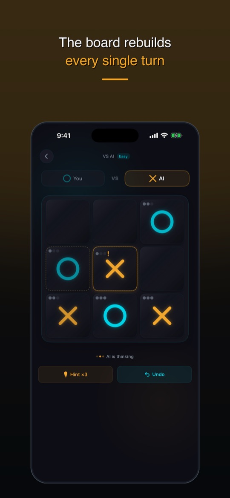
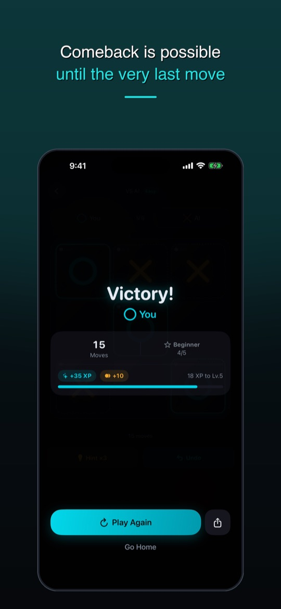
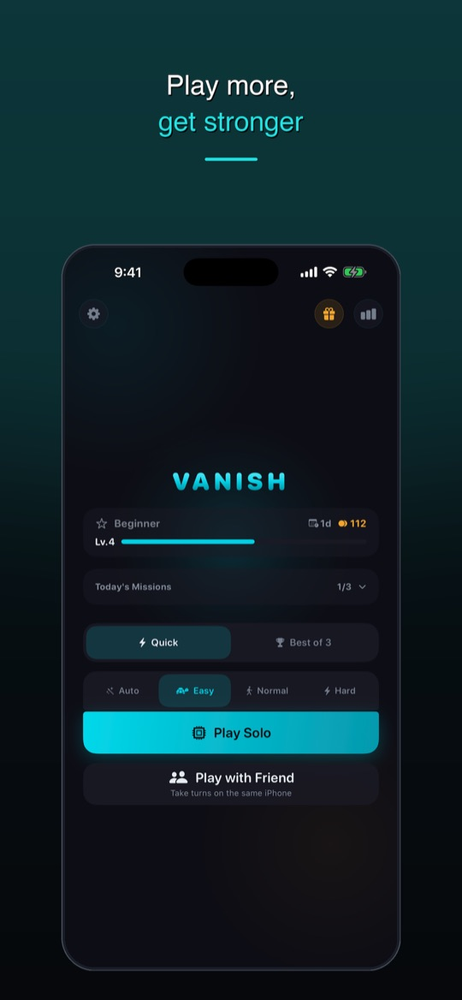

Tic tac toe, but your oldest piece vanishes.
Vanish is a free tic tac toe game for iPhone — play the AI or a friend (2 player). You keep only 3 pieces — place a 4th and your oldest one disappears. The board never fills up, so there are almost no draws.
Download on the App Store Free · iPhone · Plays offlineThe vanish rule
This variant is also known as infinite tic tac toe, vanishing tic tac toe or 3-piece tic tac toe — and in the UK and Australia, noughts and crosses.
Place up to 3
Each player can have at most three pieces on the board.
The oldest blinks
Before your 4th move, your oldest piece starts blinking.
Then it vanishes
Place the 4th and the oldest is gone. Lines you built can fall apart.
Why it beats classic tic tac toe
Classic 3×3 tic tac toe ends in a draw between players who know it. In Vanish you have to read which piece disappears next — yours and your opponent's — so every match is decided by thinking a few moves ahead.



What's inside
- 4 AI levels — Auto adapts to your results; Easy, Normal and Hard
- Local 2-player — pass one iPhone back and forth
- Quick match or Best of 3, with a coin toss for the first move
- Daily missions, a daily chest and 6 ranks from Beginner to Master
- Hints and undo — up to 3 hints and 1 undo per game
- Offline — no connection needed to play
FAQ
What is infinite tic tac toe?
A tic tac toe variant where each player keeps only 3 pieces. When you place a 4th, your oldest piece disappears, so the board never fills up and the game continues until someone gets three in a row.
Is there an iPhone app for tic tac toe where pieces disappear?
Yes — Vanish is a free iPhone game built around this rule, with AI opponents and local 2-player mode.
Can I play offline?
Yes. Matches against the AI and local 2-player games work without an internet connection.
Is Vanish free? Does it have ads?
Vanish is free and shows ads, including short ads between some matches and optional reward videos. A one-time purchase removes ads, and you can restore it from Settings.
Is there an iPad or Android version?
Vanish is built for iPhone. There is no Android version at the moment.
Found a bug?
Please use the support form.